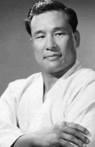

Qu'est ce que le karaté Kyokushin ?
Le kyokushin est un karaté full contact, qui met l’accent sur l’efficacité en combat réel. Généralement, ce style de karaté n’autorise pas les protections lors de combats en compétition. Les coups peuvent être portés à pleine puissance. Il n’est, en revanche, pas permis de porter des coups de poing à la tête de l’adversaire, uniquement les jambes et genoux, ce qui donne lieu à des combats au corps à corps très intenses.
Le kyokushin est le style de karaté considéré comme le plus efficace et le plus dur de tous, car les pratiquants sont poussés à aller toujours plus loin, tant sur le plan physique que mental.

créateur du style Kyokushin
Origines du Kyokushinkaï
Le symbole du Kyokushinkai est le Kanku, dont les origines proviennent du kata Kanku. Kanku se traduit par « contempler le ciel ». Le style Kyokushinkai fut fondé par Sosai Masutatsu Oyama, 10e Dan. Ce grand maître, peu satisfait des règles de karaté conventionnel, créa ses propres règles de compétition selon lesquelles les combats peuvent aller jusqu’au K.O. Le premier dojo au style Kyokushinkai fut créé à Tokyo, en 1953. Il faudra attendre 1964 pour que le style s’exporte outre-mer.
L'histoire du Dojo
Le Dojo a été fondé en 2017 par Sensei Harold Bongonda, alors 1ère Dan en karaté Kyokushin. Hi no Ishi (火の意志) signifie "la volonté du feu", nom représentatif de l'état d'esprit des pratiquants de Kyokushin, mais aussi de la principale valeur que Sensei Harold souhaite insuffler à ses élèves: ne jamais abandonner. A l'origine, le Dojo fût fondé en lien étroit avec l'Université de Mons et était réservé aux étudiants, mais il s'en est dépuis progressivement émancipé et est maintenant ouvert à tous.